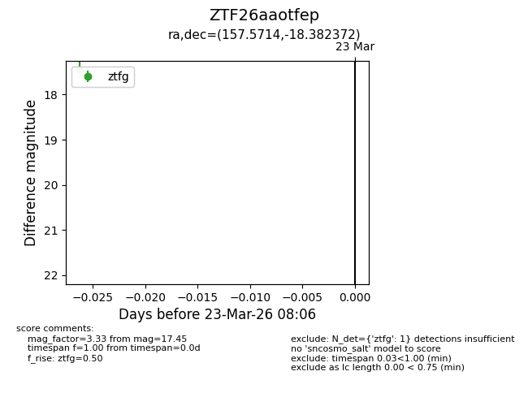
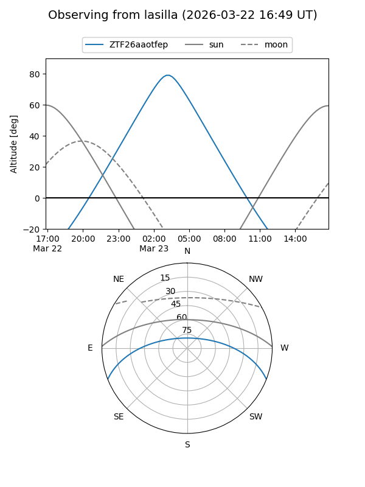
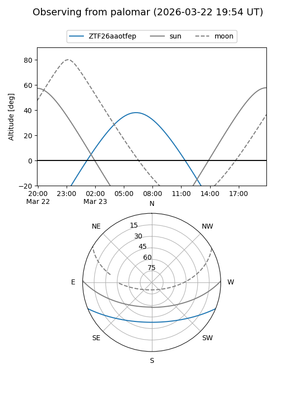

ZTF26aaotfep
Target ZTF26aaotfep at 2026-03-23 08:08
Aliases and brokers:
FINK: link
Lasair: link
ALeRCE: link
alt names
ZTF26aaotfep (ztf,fink_ztf)
Coordinates:
equatorial (ra, dec) = 157.5714,-18.38237
equatorial (HMS+DMS) = 10:30:17.15,-18:22:56.54
galactic (l, b) = (262.0768,+33.06522)
Flags:
Photometry:
last ztfg=17.45
1 ztfg detections
Lightcurve

Visibility


Additional plots